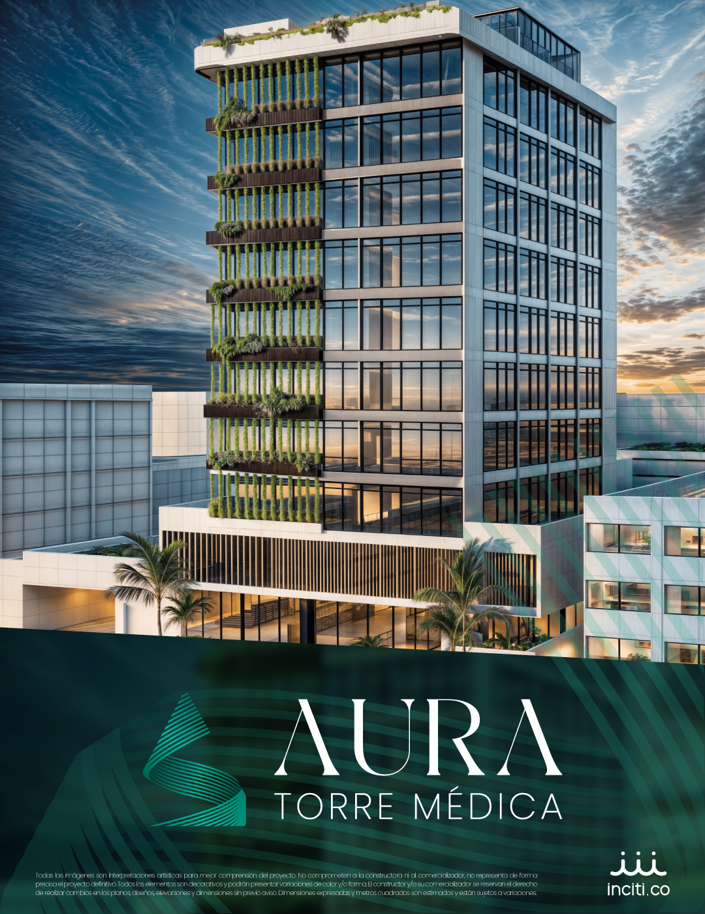
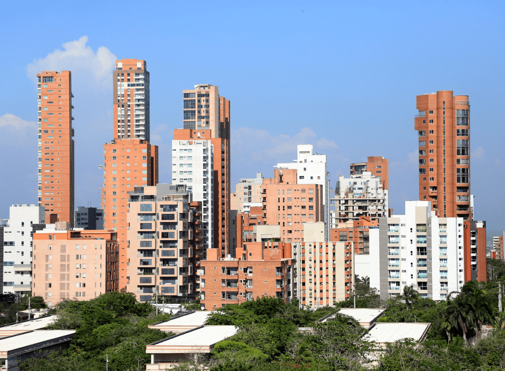
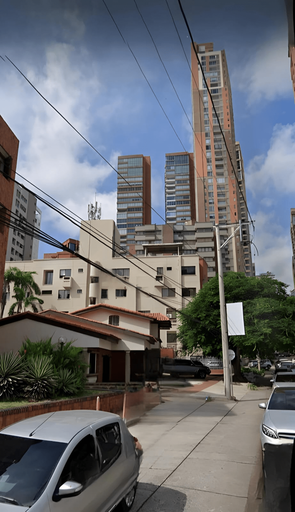
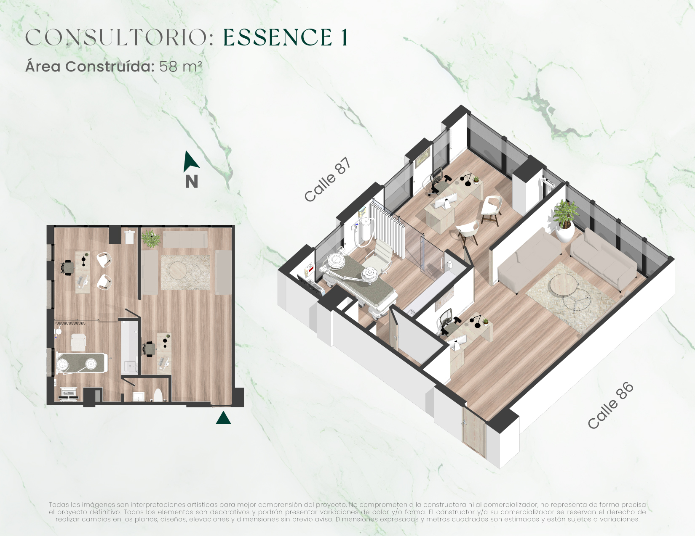
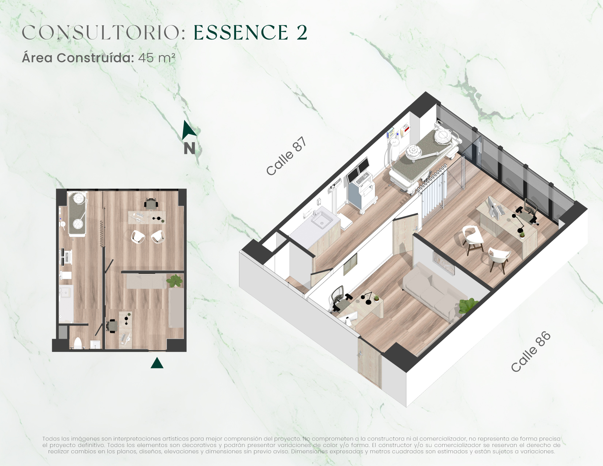
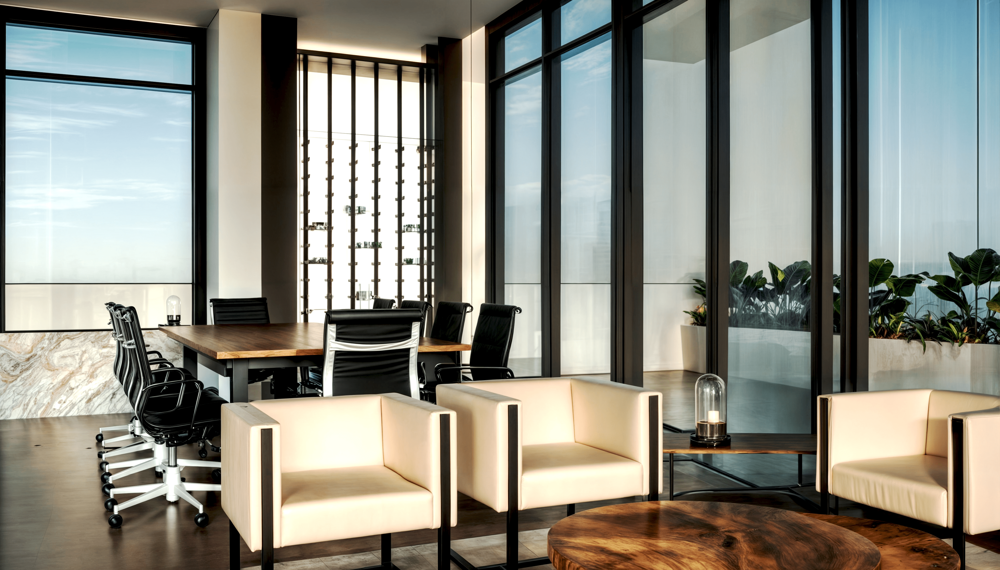
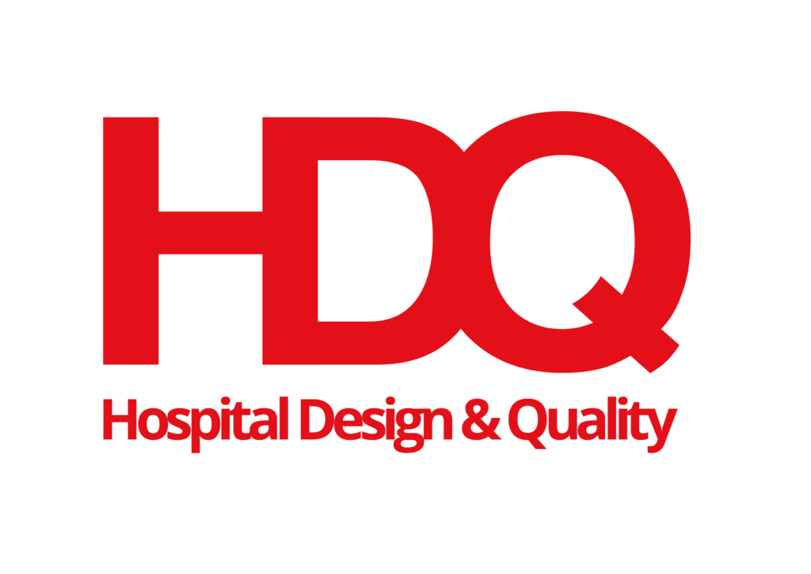

INNOVACIÓN Y CALIDAD MÉDICA
Imagina un lugar donde la excelencia médica se encuentra con la comodidad y la innovación, donde cada detalle esta diseñado para elevar tu práctica médica.
- 63 Consultorios diseñados con acabados premium entre 48 y 74 m²
- Ubicación estratégica con doble conectividad por las calles 86 y 87.
- Diseño sostenible integrado en todas las áreas para el beneficio de los inversionistas.
- Aura contará con pabellón de quirófanos para cirugías de mediana y baja complejidad.

POR QUÉ INVERTIR EN AURA
Creciente Turismo en Salud
A Colombia ingresan entre 50 mil y 90 mil turistas de este sector anualmente.
Ubicación Estratégica
La mejor ubicación en el clúster médico de la ciudad, cerca de barrios exclusivos, hoteles y centros comerciales.
Diseño Exclusivo para Salud
Proyecto con uso exclusivo en salud, con zona de quirófanos para reducir tiempos y facilitar la habilitación de consultorios.
Proyecto Sostenible
Un proyecto ambiental y sostenible financieramente, que se verá reflejado en ahorros para los inversores propietarios.
Ciudad en Crecimiento
Barranquilla se destaca como líder en atracción de inversiones. La disponibilidad de oficinas bajó al 5.03% en el primer trimestre de 2024.
Inversión Estratégica
AURA ofrece una inversión sólida impulsada por el turismo en salud, una ubicación privilegiada, diseño especializado, sostenibilidad y el dinamismo de Barranquilla.
TU NUEVA EXPERIENCIA MÉDICA EN UN SOLO LUGAR
EL LUJO DE TENERLO TODO, EN UN MISMO LUGAR
Excelencia Quirúrgica en Alianza con HDQ
Aura contará con quirófanos de vanguardia gracias a nuestra alianza estratégica con HDQ, una consultora internacional líder en calidad e infraestructura hospitalaria.
- Altos Estándares Globales: Diseño y operación que cumplen con las más rigurosas normas de calidad y seguridad del paciente a nivel mundial.
- Pabellón de Cirugía Avanzado: Equipado para procedimientos de mediana y alta complejidad, optimizando la seguridad y eficiencia.
- Experiencia Comprobada: HDQ ha asesorado más de 20 proyectos de acreditación en Latinoamérica y participado en importantes desarrollos hospitalarios.
¿Deseas agendar una cita?


UBICACIÓN
AURA se sitúa en el corazón del clúster médico de Barranquilla, un enclave consolidado con acceso inmejorable. Rodeado de hospitales, laboratorios, centros comerciales y servicios clave.
- Dirección: Calle 86 # 50 - 87
- Acceso rápido por las calles 86 y 87.
- Cerca a Clínica Iberoamérica
- Cercanía a centros comerciales como Viva y Plaza 51

SABEMOS QUE EL TIEMPO ES VALIOSO PARA TI
EN AURA ESTARÁS CERCA A:
CENTROS COMERCIALES

Viva
A 1 minuto

Plaza 51
A 1 minuto

Buenavista
A 8 minutos
CLÍNICAS Y HOTELES

Clínica Iberoamerica
A 1 minuto

Hotel Hampton
A 3 minutos

Hotel Ibis
A 1 minuto
MÁS CERCA DE TUS PACIENTES

Riomar
A 2 MINUTOS

El Golf
A 5 minutos

Alto prado
A 6 minutos
AGENDA TU CITA CON UNO DE NUESTROS ASESORES
NUESTROS CONSULTORIOS
Explora los renders que capturan la esencia y sofisticación de AURA.
VITALY
Espacios óptimos
Área: 26 m² A 31 m²
1 parqueadero
Ideal si estás buscando lo
vital.
ESSENCE
Espacios amplios
Área: 45 m² a 65 m²
1 parqueadero
Ideal para más comodidad.



SERENITY
Consultorios dobles
Área: 58 m² a 90 m²
2 pq. (uds. ≥ 74 m²)
Ideal para socios.
EN AURA CONTARÁS CON

- Lobby doble altura.
- Sala de estar para pacientes.
- Lounge médico para reuniones.
- Café rooftop.

.jpg)
CONOCE DONDE ESTAMOS UBICADOS
NUESTRO EQUIPO
Inciti
Desarrollamos proyectos que transforman ciudades creando comunidades inteligentes y sostenibles.
Pubenza
Constructor con más de 30 años de experiencia en la edificación, construcción de vivienda, edificaciones institucionales y obras civiles.
Alianza Fiduciaria
Alianza Fiduciaria y Alianza Valores son compañías líderes en el mercado colombiano en fiducia e inversiones

HDQ
Aliado estratégico lìder en infraestructura y gestion hospitalaria, reconocifa por particiapacion en importantes centros hospitalarios en colombia y en el exterior.

FORMA PARTE DEL FUTURO DE LA SALUD
Regístrate y sé de los primeros en recibir información exclusiva sobre
Aura Torre Médica.